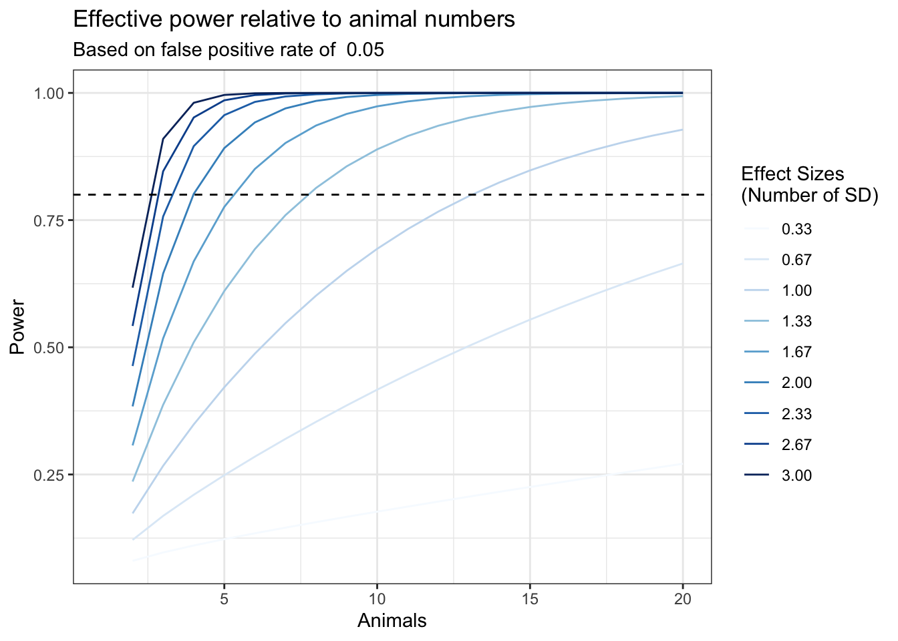

library(pwr)
#desired effect size in standard deviations
effect.size <- 5 # expected difference in absolute terms
assay.sd <- 3 # the standard deviation of the assay, in the same units as the effect size
effect.size.sd <- effect.size/assay.sd
#desired false positive rate
fpr <- 0.05
#desired power (inverse of false negative rate)
power <- 0.8
#calculate required n
required.animals <- pwr.t.test(d=effect.size.sd,
power=power,
sig.level=fpr,
alternative="greater",
type="two.sample")$nPower Analysis Example
These data can be found in /Users/davebrid/Documents/GitHub/Lab-Documents-BL/Experimental Policies/Power Analysis and this script was most recently run on Wed Aug 21 12:05:07 2024.
Power Analysis
The assumptions set in this analysis are:
- The desired effect size is 5. This is what we want to power our analysis to be able to detect.
- The standard deviation of the measurement is 3, in the same units as the effect size.
- Therefore Cohen’s d is 1.667 or the number of standard deviations we want to be able to detect.
- The acceptable false positive rate is 0.05. This is the percent chance that we observe something that is not actually true.
- The acceptable false negative rate is 0.2. This is the percent chance that we miss something that is actually true.
- The power of our analysis is set at 0.8.
Calculate Number of Animals
At a standard power of 0.8 with a false positive rate of 0.05 and a desired effect size of a 5 difference in percent fat mass we would need 5.283 animals in each group.
Calculate Detectable Effect Size
required.animals.effect <- round(required.animals)
effective.d <- pwr.t.test(power=power,
n=required.animals.effect,
sig.level=fpr,
alternative="greater",
type="two.sample")$dBased on the design above we should expect to detect an effect size of 1.725 standard deviations with 0.8 power, 5 animals and a FPR of 0.05.
Calculate Effective Power
required.animals.power <- round(required.animals)
effective.power <- pwr.t.test(d=effect.size.sd,
n=required.animals.power,
sig.level=fpr,
alternative="greater",
type="two.sample")$powerBased on the design above we have a 77.599% chance of seeing a difference of 1.667 with 5 animals and a FPR of 0.05.
The plot below shows how likely we are to detect a difference (the power) as we vary the number of animals (x-axis) and the desired effect size.
animals <- seq(1:20) #animal range to test
effect.sizes <- seq(1,9,by=1) # effect size range to test
power.table <- expand.grid(animals=animals,effect.sizes=effect.sizes)
power.table$effect.sizes.sd <- power.table$effect.sizes/assay.sd
for (effect.size.sd in power.table$effect.sizes.sd){
for (n.test in power.table$animals){
power.table[power.table$animals==n.test&power.table$effect.sizes.sd==effect.size.sd,'power'] <-
pwr.t.test(d=effect.size.sd,
n=n.test,
sig.level=fpr,
alternative="greater",
type="two.sample")$power
}
}
library(ggplot2)
library(RColorBrewer)
power.table$effect.sizes.sd <- as.factor(format(round(power.table$effect.sizes.sd,2),nsmall=2))
p <- ggplot(power.table, aes(y=power,x=animals))
p + geom_line(aes(col=effect.sizes.sd)) +
labs(y="Power",
x="Animals",
title="Effective power relative to animal numbers",
subtitle=paste("Based on false positive rate of ", fpr)) +
geom_hline(yintercept=0.8, lty=2) +
scale_colour_manual("Effect Sizes \n(Number of SD)", values=brewer.pal(10,'Blues'))
Session Information
sessionInfo()R version 4.4.1 (2024-06-14)
Platform: x86_64-apple-darwin20
Running under: macOS Monterey 12.7.6
Matrix products: default
BLAS: /Library/Frameworks/R.framework/Versions/4.4-x86_64/Resources/lib/libRblas.0.dylib
LAPACK: /Library/Frameworks/R.framework/Versions/4.4-x86_64/Resources/lib/libRlapack.dylib; LAPACK version 3.12.0
locale:
[1] en_US.UTF-8/en_US.UTF-8/en_US.UTF-8/C/en_US.UTF-8/en_US.UTF-8
time zone: America/Detroit
tzcode source: internal
attached base packages:
[1] stats graphics grDevices utils datasets methods base
other attached packages:
[1] RColorBrewer_1.1-3 pwr_1.3-0 ggplot2_3.5.1 dplyr_1.1.4
[5] tidyr_1.3.1 knitr_1.48
loaded via a namespace (and not attached):
[1] vctrs_0.6.5 cli_3.6.3 rlang_1.1.4 xfun_0.46
[5] purrr_1.0.2 generics_0.1.3 jsonlite_1.8.8 labeling_0.4.3
[9] glue_1.7.0 colorspace_2.1-1 htmltools_0.5.8.1 scales_1.3.0
[13] fansi_1.0.6 rmarkdown_2.27 grid_4.4.1 munsell_0.5.1
[17] evaluate_0.24.0 tibble_3.2.1 fastmap_1.2.0 yaml_2.3.10
[21] lifecycle_1.0.4 compiler_4.4.1 pkgconfig_2.0.3 farver_2.1.2
[25] digest_0.6.36 R6_2.5.1 tidyselect_1.2.1 utf8_1.2.4
[29] pillar_1.9.0 magrittr_2.0.3 withr_3.0.0 tools_4.4.1
[33] gtable_0.3.5